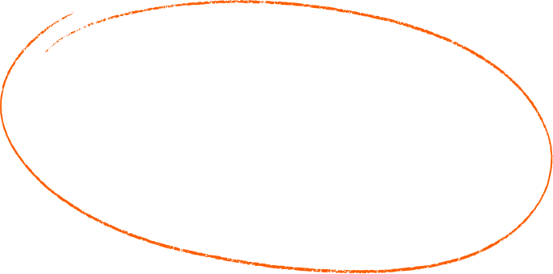
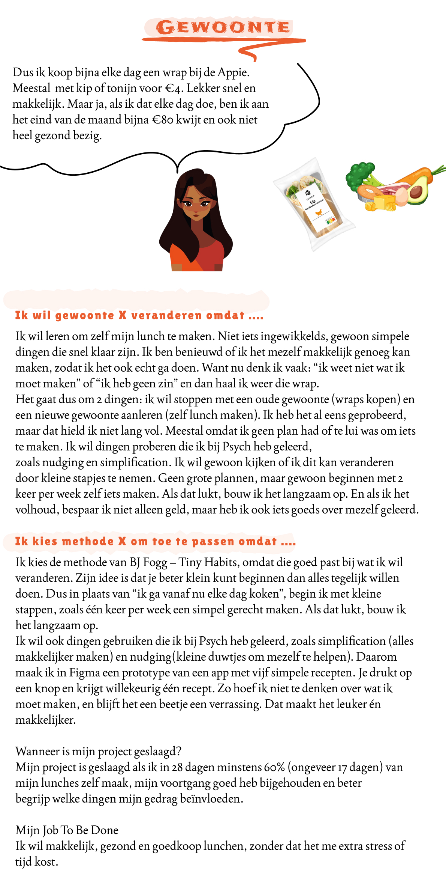

Korte beschrijving van de opdracht
Voor dit project moest ik een gewoonte veranderen door zelf te experimenteren en te ervaren. De opdracht bestond uit drie onderdelen:
- 1Verander je gewoonte: bedenk interventie(s)
- 2Monitor je proces
- 3Deel je insights
OUDE GEWOONTE
Bijna elke dag wraps kopen voor lunch
- Ik weet niet wat ik moet maken
- € 4 per dag
- Ik heb geen zin
NIEUWE GEWOONTE
Zelf lunch maken
- Doel: sparen voor een Uggs
- € 4 bersparen per dag
Aanpak
Klein beginnen werkt beter dan alles tegelijk. Start met:
- 2x per week
- Maak het makkelijk(simplifaction)
- Gebruik kleine duwtjes(nudging)

Waarom belangrijk voor mij?
€4 besparen per dag = €150 in 28 dagen → genoeg voor Uggs.
Plus: leren of ik gedrag kan veranderen met theorie uit Psych.
Bekijk hier welke competenties ik gebruik heb

Probleem geïdentificeerd: Ik kocht te vaak wraps (oude gewoonte)
Zelfonderzoek: Ik analyseerde waarom ik het eerder niet volhield
Theorie toegepast: Je onderzocht BJ Fogg's Tiny Habits methode en Psych concepten (nudging, simplification)
Job To Be Done bepaald: "Makkelijk, gezond en goedkoop lunchen zonder stress/tijd"